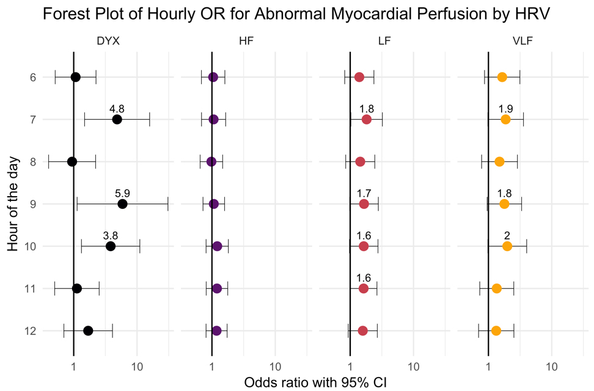
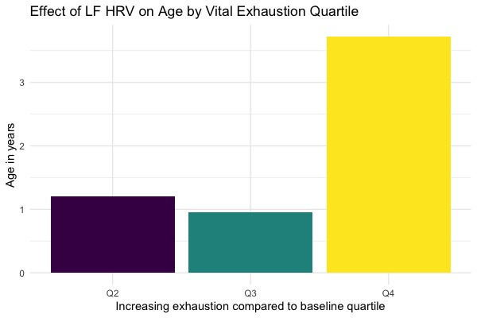
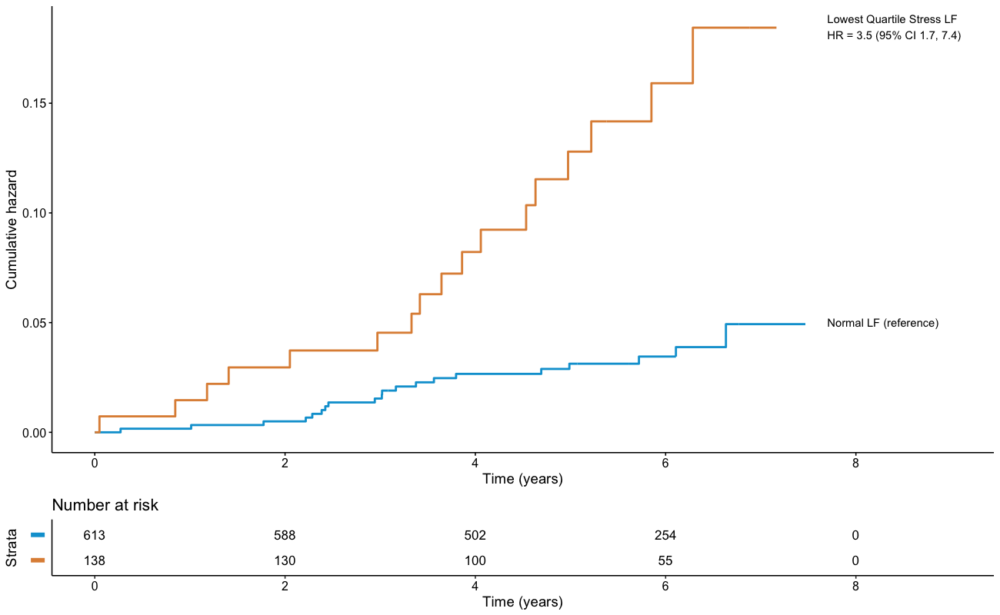
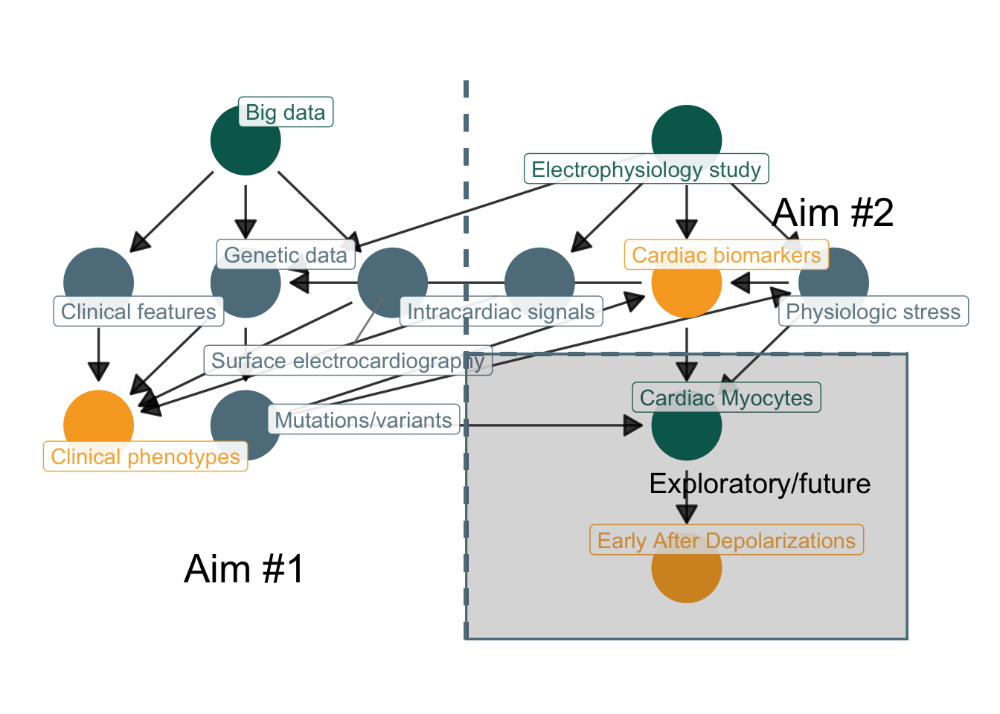

── Attaching core tidyverse packages ──────────────────────── tidyverse 2.0.0 ──
✔ dplyr 1.1.4 ✔ readr 2.1.5
✔ forcats 1.0.0 ✔ stringr 1.5.1
✔ ggplot2 3.5.0 ✔ tibble 3.2.1
✔ lubridate 1.9.3 ✔ tidyr 1.3.1
✔ purrr 1.0.2
── Conflicts ────────────────────────────────────────── tidyverse_conflicts() ──
✖ dplyr::filter() masks stats::filter()
✖ dplyr::lag() masks stats::lag()
ℹ Use the conflicted package (<http://conflicted.r-lib.org/>) to force all conflicts to become errors
Attaching package: 'scales'
The following object is masked from 'package:purrr':
discard
The following object is masked from 'package:readr':
col_factor
Attaching package: 'ggdag'
The following object is masked from 'package:stats':
filterVagolysis and Arrhythmogenesis
T32/TPIPCVM Seminar
Introduction
Outline
- Overview
- Step 1: Establish relationship between ANS and cardiac physiology
- Step 2: Evaluate effect of stress on CV mortality
- Step 3: Determine clinical impact of vagal withdrawal
- Step 4: Identify a representative disease model = pAF
- Research proposal
Significance
- Knowledge gaps:
- biomarkers of response to neuromodulation therapy, including ablation
- understanding of regional variation in innervation affects arrhythmogenesis
- translation from single-cell studies to human models
- Research priorities:
- role of ANS signaling in emergence and maintenance of cardiac arrhythmias
- target modulation of ANS to attenuate electrical remodeling
- predict underlying biomarkers
- understand time course of ANS remodeling and neuropeptide expression
- sex/race differences in cardiac arrhythmogenesis
Mehra et al. (2022) has identified these gaps and priorities in a NHLBI-supported expert-led workshop
Objectives
- Understand importance of neural regulation of cardiac physiology
- Understand the role of cardiovagal activity in arrhythmogenesis
- Identify gaps in current diagnostic and treatment options
- Review a research proposal in autonomic and electrical heart disease

Hypothesis: In humans with paroxysmal atrial fibrillation, during episodes of increased sympathetic outflow, inappropriate or disproportionate vagal withdrawal (vagolysis) leads to arrhythmogenesis.
. . .
- Changes in electrical activity precede the onset of arrhythmias
- Arrhythmia onset requires both a structurally-susceptible heart and a trigger
- Triggers effect the electrical microcosm of the heart through autonomic outflows/imbalance
. . .
The concept of vagolysis and arrhythmogenesis will be referred to as vagal-triggered arrhythmias (VTA) hereafter.
| Abbreviations | Definitions |
|---|---|
| VTA | vagally-triggered arrhythmia |
| (p)AF | (paroxysmal) atrial fibrillation |
| AAD | anti-arrhythmic drugs |
| ANS/SNS/PNS | autonomic/sympathetic/parasympathetic nervous sytem |
| GP | ganglionated plexi |
| NPY, Gal | neuropeptide Y, galanin |
| HF, LF HRV | high & low frequency heart rate variability |
| EPS, EAM | electrophysiology study, electro-anatomical mapping |
| LA, RA, LV, RV | left/right atrium/ventricle |
| CAD, MI | coronary artery disease, myocardial ischemia/infarction |
| VNS | vagal nerve stimulation |
To help follow along with the complexity of the topic, there is a consistent color scheme noted throughout.
- Computational & digital signal processing methods will be noted in green
- Clinical data that requires a physician or cardiologist to obtain are noted in red
- Arrhythmia and electrical focused work is noted in orange
- Epidemiological or genetic based methods are noted in blue
Relationship between ANS and cardiac physiology
Neurocardiac axis
- Neurocardiac axis is a hierarchical system of SNS and PNS afferent/efferent circuits that interact at multiple levels (Armour et al. 1997)
- Cortex ↔︎ brainstem
- Spinal cord ↔︎ extracardiac ganglia (e.g. stellate)
- Intrinsic cardiac nervous system (ICNS) ↔︎ heart
- Autonomic regulation is critical in the development of most CV disease
- Disregulated catecholamines in heart failure
- Post myocardial infarct VF
- Triggered arrhythmias such as VT

- Lower levels of networked structures (ICNS, hypothalamus) integrate afferent information about metabolic demands
- Higher levels of networked structures (amydala, cortex) integrate lower networks and generate conscious/unconscious CV state representations
- Allows for environmental/psychological factors to interplay with cardiac physiology, e.g. mental stress causing arrhythmia
Assessment of the ANS
- Sympathogal balance integrate at the heart, as seen in Figure 1
- HRV serves a surrogate for autonomic function
- Variability occurs due to sympathovagal balance at level of sinoatrial node
- Sympathetic outflow and vagal outflow occur at difference speeds allowing some level of differentiation

Autonomic function and coronary physiology
A study in veteran twins:
- Evaluated 24-hour HRV in controlled setting/scheduled
- Evaluated quantitative myocardial perfusion imaging
- Compared circadian patterns of HRV with coronary flow reserves
HRV can be processed through open-source software(Vest et al. 2018)



Summary: HRV seems to correlate with clinically relevant ANS influences on the heart
- ANS function varies with circadian rhythm(Portaluppi et al. 2012)
- Decrease HRV responsiveness to the morning surge suggests dysfunction above the level of the heart
- Decreased ANS variability also correlates with myocardial ischemia (particularly coronary flow reserve), which is partially mediated through adrenergic tone(Del Buono et al. 2021)
Evaluate effect of stress on CV mortality
How do we perturb the ANS?
Chronic mental stress
- Depression & anxiety disorders relate to CVD
- Inflammatory mechanisms(Hammadah, Sullivan, et al. 2018; Pollitt et al. 2008)
- Autonomic mechanisms(Carney, Freedland, and Veith 2005; Huang et al. 2018; Penninx 2017; Smolderen et al. 2017)
Acute mental stress
- Associated with many changes to cardiac physiology(Strike and Steptoe 2003)
- Peripheral vasoconstriction,(Kim et al. 2019; Lima et al. 2019)
- Coronary vasomotion(Hammadah, Kim, et al. 2018)
- Mental stress-induced myocardial ischemia(Vaccarino et al. 2021), as seen in Figure 7



This uses an more complex approach of survival analysis for recurrent events

Summary: Stress seems to increase risk of CV mortality, through autonomic mechanisms (as compared to ischemic)
- Autonomic dysfunction correlates with future CV mortality(La Rovere et al. 1998)
- HRV seems to be associated with clinically features of CV mortality
- Acute stress seems to be of particular importance
Determine clinical impact of vagal withdrawal
Critical role of the vagus
- Embryologically, vagus nerve sprouts from medulla and extends to distant organs (thus long pre-ganglionic axons) e.g. heart, lung, intestines
- Parasympathetic control is evolutionarily more primitive in vertebrates, pre-dating sympathetic control
- Sharks exhibit phasic HRV without sympathetic innervation (Taylor, Wang, and Leite 2022)
- Mammalian vagal control is more complex, with multiple nuclei, e.g. polyvagal (Stephen W. Porges 2009)
- Mammalian vagal outflow is particularly coupled with cardiorespiratory control
- Leads to respiratory sinus arrhythmia
- Respiratory changes occur at a high-frequency, can be measured by HRV
Vagal therapeutic interventions
- Chronic VNS reduces drop in ejection fraction in different animal models of cardiomyopathy, including MI, but studies have mixed results in humans
- NECTAR-HF ~ VNS or sham, no difference at 6 months in LV size/function, n = 96
- INOVATE-HF ~ right VNS + GDMT vs. GDMT, no difference in mortality, n = 700
- ANTHEM-HF ~ non-randomized VNS, improved LV function, pilot study (required titrated VNS to cause decrease in HR)
- VNS may be anti-arrhythmic in animal models, with decreased VT/VF, but minimal human studies
- GANGLIA-AF, paroxysmal AF randomized to PVI or atrial GP ablation, decreased AAD dosages in GP group, n = 102

Jacksonian dissolution
Jacksonian dissolution is the concept that older, more primitive systems will take over when more evolved systems break down. Polyvagal theory (theorized by Porges)(Stephen W. Porges 2007) posits there are two branches of the vagus nerve
- Reptilian vagus: primitive, unmyelinated, controlled by the dorssal motor nucleus
- Mammalian vagus: evolved, myelinated, controlled by teh nucleus ambiguus
This may explain the additive effect of reduced resting HF HRV and reduced HF HRV reactivity
Identify a representative disease model = paroxysmal AF
Sympathovagal crosstalk
- Arrhythmia thresholds affected by sympathetic and vagal activity
- Intracardiac cross-talk between adrenergic (sympathetic) and cholinergic (vagal) neurons in the hierarchy of neurocardiac axis is critical for arrhythmogenesis during mental stress
- Atria are heavily innervated by autonomic ganglionic plexi, leading to the complex activity that regulates cardiac conductive properties(Hoover et al. 2009; Armour et al. 1997)
- Sympathetic nervous activity is slower onset, but vagolysis is rapid, thus being a more likely causal component of arrhythmogenesis
Molecular mechanisms
- Sympathetic/adreneric neurons release catecholamines (NE) that directly affect the myocardium
- NPY and galanin is also released, which both inhibit cholinergic activity (Herring2015?; Herring et al. 2012)
- Both inhibit firing and leading to vagolytic effects on the myocardium(Kalla et al. 2020; Herring et al. 2008)
- Galanin released as a adrenergic co-transmitter, binding to GalR1 receptors
- NPY binds to cholinergic neurons through the Y2 receptor
- Both directly/indirectly involve protein kinase C
- NPY receptors exist along the neurocardiac axis, including adrenal medulla (Y3) and cardiac tissue (Y2)(Coote 2013)


Genetic variants
| Variant | Description |
|---|---|
| rs16147 | NPY promoter region |
| rs10842383 | LINC00477, HF HRV |
| rs236349 | PPIL1, RMSSD |
| rs4262 | GNG11, SDNN |
| rs7980799 | SYT10, respiratory sinus arrhythmia |
| rs12974991 | NDUFA11, HF HRV |
Inadequate classification
- pAF has been separated into coarse, non-physiological groups (paroxysmal, persistent, permanent)
- Diagnostic and treatment strategies are overally-generalized, and do not identify or target sub-phenotypes or endo-phenotypes that may exist
- e.g. vagally-mediated AF responds well to disopyramide
- Attempts to re-classify/cluster AF have been performed,[Watanabe et al. (2021); Vitolo2021; Pastori et al. (2020)] and generally suggest 4 broad categories:
- Young, low risk
- High CV risk factors
- High comorbid CV disease
- High comorbid non-CV disease
However, these categories are skewed, with the younger, low-risk group being >50% of the samples.
pAF as a model for VTA
- pAF is both ubiquitous and poorly-classified
- Mechanism-driven therapies may exist for sub-phenotypes and endo-phenotypes
- Autonomic triggers associated with atrial arrhythmias
- Functional/anatomical relationship between atria and GP exist
- Electrophysiology studies are readily avaiable, with rich electrical signal data, for analysis in humans
- Genetic variants lead to cardiomyocyte changes that predispose to AF, but there are also variants that affect cardiovagal outflow
Research proposal
Research approach
- Identify within pAF if there exist VTA sub-phenotypes using population-level data:
- Clinical comorbidities
- Arrhythmia burden
- Psychosocial stressors
- Ischemic and structural heart disease
- Cardiomyopathy (atrial and ventricular)
- Identify in individuals undergoing ablative therapy for pAF if there exist patterns that support a VTA endo-phenotype using intracardiac data:
- Electrophysiology properties of AF (dominant frequencies, pulmonary vein triggers, scar burden, atrial volume)
- Intracardiac biomarkers of vagolysis (both electrical and neurohormonal)
- Genetic variants that may be susceptible to abnormal cardiovagal outflow
dag <-
dagify(
stress ~ eps,
egm ~ eps,
labs ~ stress + eps,
pheno ~ ecg + dna + egm + clin,
clin ~ epi,
ecg ~ epi,
dna ~ epi + labs,
snp ~ dna,
labs ~ snp,
stress ~ snp,
dna ~ eps,
ead ~ ipsc,
ipsc ~ labs + stress + snp,
exposure = c("eps", "epi", "ipsc"),
outcome = c("labs", "pheno", "ead"),
labels = list(
eps = "Electrophysiology study",
labs = "Cardiac biomarkers",
ead = "Early After Depolarizations",
stress = "Physiologic stress",
ecg = "Surface electrocardiography",
egm = "Intracardiac signals",
epi = "Big data",
ipsc = "Cardiac Myocytes",
pheno = "Clinical phenotypes",
clin = "Clinical features",
snp = "Mutations/variants",
dna = "Genetic data"
)
) |>
tidy_dagitty(layout = "tree") |>
node_status()
ggplot(dag, aes(x = x, y = y, xend = xend, yend = yend, color = status)) +
geom_dag_edges(
arrow_directed = grid::arrow(length = grid::unit(10, "pt"), type = "closed"),
arrow_bidirected = grid::arrow(length = grid::unit(10, "pt"), type = "open", ends = "both"),
edge_alpha = 0.8
) +
geom_dag_point() +
geom_dag_label_repel(
aes(label = label),
force = 1,
nudge_y = 0.5,
alpha = 0.9
) +
geom_segment(aes(x = 0, xend = 0.0, y = -0.5, yend = 3.5, color = grey[1]), linetype = "dashed", linewidth = 1) +
geom_segment(aes(x = 0, xend = 3, y = 1.5, yend = 1.5, color = grey[1]), linetype = "dashed", linewidth = 1) +
geom_rect(aes(xmin = 0, xmax = 3, ymin = -0.5, ymax = 1.5, color = grey[1]), alpha = 0.01) +
annotate("text", label = "Aim #1", x = -1.5, y = 0.0, size = 7) +
annotate("text", label = "Aim #2", x = 2.5, y = 2.5, size = 7) +
annotate("text", label = "Exploratory/future", x = 2.0, y = 0.6, size = 5) +
scale_color_manual(values = c("exposure" = green[2], "outcome" = orange[2]), na.value = grey[5]) +
theme_dag(legend.position = "none") Warning in geom_segment(aes(x = 0, xend = 0, y = -0.5, yend = 3.5, color = grey[1]), : All aesthetics have length 1, but the data has 22 rows.
ℹ Did you mean to use `annotate()`?Warning in geom_segment(aes(x = 0, xend = 3, y = 1.5, yend = 1.5, color = grey[1]), : All aesthetics have length 1, but the data has 22 rows.
ℹ Did you mean to use `annotate()`?

Aim #1: Clinical
- Identify clinical phenotypes of vagally-triggered AF. Clinical, intracardiac, and genetic factors will contribute to clinically-relevant phenotypes of AF.
- We will develop a pragmatic, population-level dataset to abstract clinical risk factors, ECG, and echocardiography features and therapy responses. Using unsupervised learning models, AF will be classified into seperate clusters.
- The clinical relevance of AF phenotypes will be assessed through relevant outcomes (adverse events, disease burden/progression). AF clusters identified in 1a will have distinct hazard distributions estimated through survival analysis.
Aim #2: Translational
- Determine the intracardiac characteristics of vagally-triggered AF. Structural and electrical features assessed through EPS will identify separate clinically-relevant phenotypes of AF.
- We will collect electroanatomical mapping data and electrogram recordings during PVI of paroxysmal AF. Using signal processing and feature reduction, we will identify clusters of structural and electrical AF that correlate with those identified in 1a.
- We will apply physiological stress through catecholamine infusion, respectively. Catecholamine infusion will lead to ↑NE, ↑NPY, ↑Gal expression while mental stress will lead to ↑NE, ↑NPY, ↑Gal expression
- In those with suspected vagally-triggered AF, there will be an increased risk of Y2R and Gal1R receptor polymorphisms.
- We will perform whole exome sequencing on a subset of patients from each cluster defined in 1a. Selected \(\alpha\) and \(\beta\) adrenergic receptors and cholinergic receptor polymorphisms will be associated with individual AF clusters and clinical outcomes.
End
References
Akselrod S., Gordon D., Ubel A., Shannon D., Barger C., and Cohen R. 1981. “Power Spectrum Analysis of Heart Rate Fluctuation: A Quantitative Probe of Beat-To-Beat Cardiovascular Control.” 4504. Science. Vol. 213.
Armour, J. Andrew, David A. Murphy, Bing Xiang Yuan, Sara Macdonald, and David A. Hopkins. 1997. “Gross and Microscopic Anatomy of the Human Intrinsic Cardiac Nervous System.” Anatomical Record 247 (2): 289–98. https://doi.org/10.1002/(SICI)1097-0185(199702)247:2<289::AID-AR15>3.0.CO;2-L.
Carney, Robert M., Kenneth E. Freedland, and Richard C. Veith. 2005. “Depression, the Autonomic Nervous System, and Coronary Heart Disease.” Psychosomatic Medicine 67 (May): S29–33. https://doi.org/10.1097/01.psy.0000162254.61556.d5.
Coote, J H. 2013. “Myths and Realities of the Cardiac Vagus.” Journal of Physiology 591 (17): 4073–85. https://doi.org/10.1113/jphysiol.2013.257758.
Del Buono, Marco Giuseppe, Rocco A. Montone, Massimiliano Camilli, Salvatore Carbone, Jagat Narula, Carl J. Lavie, Giampaolo Niccoli, and Filippo Crea. 2021. “Coronary Microvascular Dysfunction Across the Spectrum of Cardiovascular Diseases: JACC State-of-the-Art Review.” Journal of the American College of Cardiology 78 (13): 1352–71. https://doi.org/10.1016/j.jacc.2021.07.042.
Hammadah, Muhammad, Jeong Hwan Kim, Ibhar Al Mheid, Ayman Samman Tahhan, Kobina Wilmot, Ronnie Ramadan, Ayman Alkhoder, et al. 2018. “Coronary and Peripheral Vasomotor Responses to Mental Stress.” Journal of the American Heart Association 7 (10). https://doi.org/10.1161/JAHA.118.008532.
Hammadah, Muhammad, Samaah Sullivan, Brad Pearce, Ibhar Al Mheid, Kobina Wilmot, Ronnie Ramadan, Ayman Samman Tahhan, et al. 2018. “Inflammatory Response to Mental Stress and Mental Stress Induced Myocardial Ischemia.” Brain, Behavior, and Immunity 68 (February): 90–97. https://doi.org/10.1016/j.bbi.2017.10.004.
Herring, Neil, James Cranley, Michael N Lokale, Dan Li, Julia Shanks, Eric N Alston, Beatrice M Girard, et al. 2012. “The Cardiac Sympathetic Co-Transmitter Galanin Reduces Acetylcholine Release and Vagal Bradycardia: Implications for Neural Control of Cardiac Excitability.” Journal of Molecular and Cellular Cardiology 52 (3): 667–76. https://doi.org/10.1016/j.yjmcc.2011.11.016.
Herring, Neil, Michael N Lokale, Edward J Danson, Daniel A Heaton, and David J Paterson. 2008. “Neuropeptide Y Reduces Acetylcholine Release and Vagal Bradycardia via a Y2 Receptor-Mediated, Protein Kinase C-dependent Pathway.” Journal of Molecular and Cellular Cardiology 44 (3): 477–85. https://doi.org/10.1016/j.yjmcc.2007.10.001.
Hoang, Jonathan D., Siamak Salavatian, Naoko Yamaguchi, Mohammed Amer Swid, and Marmar Vaseghi. 2020. “Cardiac Sympathetic Activation Circumvents High-Dose Beta Blocker Therapy in Part Through Release of Neuropeptide Y.” JCI Insight 5 (11). https://doi.org/10.1172/JCI.INSIGHT.135519.
Hoover, D. B., E. R. Isaacs, F. Jacques, J. L. Hoard, P. Pagé, and J. A. Armour. 2009. “Localization of Multiple Neurotransmitters in Surgically Derived Specimens of Human Atrial Ganglia.” Neuroscience 164 (3): 1170–79. https://doi.org/10.1016/j.neuroscience.2009.09.001.
Huang, Minxuan, Amit Shah, Shaoyong Su, Jack Goldberg, Rachel J. Lampert, Oleksiy M. Levantsevych, Lucy Shallenberger, Pratik Pimple, J. Douglas Bremner, and Viola Vaccarino. 2018. “Association of Depressive Symptoms and Heart Rate Variability in Vietnam War–Era Twins.” JAMA Psychiatry 75 (7): 705. https://doi.org/10.1001/jamapsychiatry.2018.0747.
Kalla, Manish, Guoliang Hao, Nidi Tapoulal, Jakub Tomek, Kun Liu, Lavinia Woodward, Erica Dall’Armellina, et al. 2020. “The Cardiac Sympathetic Co-Transmitter Neuropeptide Y Is Pro-Arrhythmic Following ST-elevation Myocardial Infarction Despite Beta-Blockade.” European Heart Journal 41 (23): 2168–79. https://doi.org/10.1093/eurheartj/ehz852.
Kim, Jeong Hwan, Zakaria Almuwaqqat, Muhammad Hammadah, Chang Liu, Yi An Ko, Bruno Lima, Samaah Sullivan, et al. 2019. “Peripheral Vasoconstriction During Mental Stress and Adverse Cardiovascular Outcomes in Patients With Coronary Artery Disease.” Circulation Research 125 (10): 874–83. https://doi.org/10.1161/CIRCRESAHA.119.315005.
La Rovere, Maria Teresa, J Thomas Bigger, Frank I Marcus, Andrea Mortara, and Peter J Schwartz. 1998. “Baroreflex Sensitivity and Heart-Rate Variability in Prediction of Total Cardiac Mortality After Myocardial Infarction.” Lancet 351 (9101): 478–84. https://doi.org/10.1016/S0140-6736(97)11144-8.
Lima, Bruno B, Muhammad Hammadah, Jeong Hwan Kim, Irina Uphoff, Amit Shah, Oleksiy Levantsevych, Zakaria Almuwaqqat, et al. 2019. “Association of Transient Endothelial Dysfunction Induced by Mental Stress With Major Adverse Cardiovascular Events in Men and Women With Coronary Artery Disease.” JAMA Cardiology 4 (10): 988–96. https://doi.org/10.1001/jamacardio.2019.3252.
Mehra, Reena, Olga A. Tjurmina, Olujimi A. Ajijola, Rishi Arora, Donald C. Bolser, Mark W. Chapleau, Peng Sheng Chen, et al. 2022. “Research Opportunities in Autonomic Neural Mechanisms of Cardiopulmonary Regulation: A Report From the National Heart, Lung, and Blood Institute and the National Institutes of Health Office of the Director Workshop.” JACC: Basic to Translational Science 7 (3): 265–93. https://doi.org/10.1016/j.jacbts.2021.11.003.
Pastori, D, E Antonucci, A Milanese, F Violi, P Pignatelli, G Palareti, and A Farcomeni. 2020. “Clinical Phenotypes of Atrial Fibrillation and Risk of Mortality: A Cluster Analysis.” European Heart Journal 41 (November). https://doi.org/10.1093/ehjci/ehaa946.2893.
Penninx, Brenda W. J. H. 2017. “Depression and Cardiovascular Disease: Epidemiological Evidence on Their Linking Mechanisms.” Neuroscience and Biobehavioral Reviews 74: 277–86. https://doi.org/10.1016/j.neubiorev.2016.07.003.
Pollitt, R. A., J. S. Kaufman, K. M. Rose, A. V. Diez-Roux, D. Zeng, and G. Heiss. 2008. “Cumulative Life Course and Adult Socioeconomic Status and Markers of Inflammation in Adulthood.” Journal of Epidemiology and Community Health 62 (6): 484–91. https://doi.org/10.1136/jech.2006.054106.
Porges, Stephen W. 2007. “The Polyvagal Perspective.” Biological Psychology 74 (2): 116–43. https://doi.org/10.1016/j.biopsycho.2006.06.009.
Porges, Stephen W. 2009. “The Polyvagal Theory: New Insights into Adaptive Reactions of the Autonomic Nervous System.” Cleveland Clinic Journal of Medicine 76: S86. https://doi.org/10.3949/ccjm.76.s2.17.
Portaluppi, Francesco, Ruana Tiseo, Michael H Smolensky, Ramón C Hermida, Diana E Ayala, and Fabio Fabbian. 2012. “Circadian Rhythms and Cardiovascular Health.” Sleep Medicine Reviews 16 (2): 151–66. https://doi.org/10.1016/j.smrv.2011.04.003.
Shah, Anish S., Alvaro Alonso, Eric A Whitsel, Elsayed Z. Soliman, Viola Vaccarino, and Amit J Shah. 2021. “Association of Psychosocial Factors With Short‐Term Resting Heart Rate Variability: The Atherosclerosis Risk in Communities Study.” Journal of the American Heart Association 10 (5): e017172. https://doi.org/10.1161/JAHA.120.017172.
Shah, Anish S, Amit J Shah, Rachel Lampert, Jack Goldberg, J. Douglas Bremner, Lian Li, Marc D. Thames, Viola Vaccarino, and Anish S. Amit J. Shah. 2020. “Alterations in Heart Rate Variability Are Associated with Abnormal Myocardial Perfusion.” International Journal of Cardiology 305 (April): 99–105. https://doi.org/10.1016/j.ijcard.2020.01.069.
Shivkumar, Kalyanam, Olujimi A. Ajijola, Inder Anand, J. Andrew Armour, Peng Sheng Chen, Murray Esler, Gaetano M. De Ferrari, et al. 2016. “Clinical Neurocardiology Defining the Value of Neuroscience-Based Cardiovascular Therapeutics.” Journal of Physiology 594 (14): 3911–54. https://doi.org/10.1113/JP271870.
Smolderen, Kim G., Donna M. Buchanan, Kensey Gosch, Mary Whooley, Paul S. Chan, Viola Vaccarino, Susmita Parashar, Amit J. Shah, P. Michael Ho, and John A. Spertus. 2017. “Depression Treatment and 1-Year Mortality After Acute Myocardial Infarction: Insights from the TRIUMPH Registry (Translational Research Investigating Underlying Disparities in Acute Myocardial Infarction Patients’ Health Status).” Circulation 135 (18): 1681–89. https://doi.org/10.1161/CIRCULATIONAHA.116.025140.
Strike, P C, and A Steptoe. 2003. “Systematic Review of Mental Stress-Induced Myocardial Ischaemia.” European Heart Journal 24 (8): 690–703. https://doi.org/10.1016/S0195-668X(02)00615-2.
Taggart, Peter, Mark R Boyett, Sunil Jit R. J. Logantha, and Pier D Lambiase. 2011. “Anger, Emotion, and Arrhythmias: From Brain to Heart.” Frontiers in Physiology 2 OCT. https://doi.org/10.3389/fphys.2011.00067.
Taylor, Edwin W., Tobias Wang, and Cleo A. C. Leite. 2022. “An Overview of the Phylogeny of Cardiorespiratory Control in Vertebrates with Some Reflections on the ‘Polyvagal Theory’.” Biological Psychology 172 (July). https://doi.org/10.1016/j.biopsycho.2022.108382.
Vaccarino, Viola, Zakaria Almuwaqqat, Jeong Hwan Kim, Muhammad Hammadah, Amit J. Anish Shah, Yi An Ko, Lisa Elon, et al. 2021. “Association of Mental Stress-Induced Myocardial Ischemia with Cardiovascular Events in Patients with Coronary Heart Disease.” JAMA - Journal of the American Medical Association 326 (18): 1818–28. https://doi.org/10.1001/jama.2021.17649.
Vest, Adriana N., Giulia Da Poian, Qiao Li, Chengyu Liu, Shamim Nemati, Amit J. Shah, and Gari D. Clifford. 2018. “An Open Source Benchmarked Toolbox for Cardiovascular Waveform and Interval Analysis.” Physiological Measurement 39 (10): 105004. https://doi.org/10.1088/1361-6579/aae021.
Watanabe, Eiichi, Hiroshi Inoue, Hirotsugu Atarashi, Ken Okumura, Takeshi Yamashita, Eitaro Kodani, Ken Kiyono, and Hideki Origasa. 2021. “Clinical Phenotypes of Patients with Non-Valvular Atrial Fibrillation as Defined by a Cluster Analysis: A Report from the J-RHYTHM Registry.” IJC Heart & Vasculature 37 (December): 100885. https://doi.org/10.1016/j.ijcha.2021.100885.